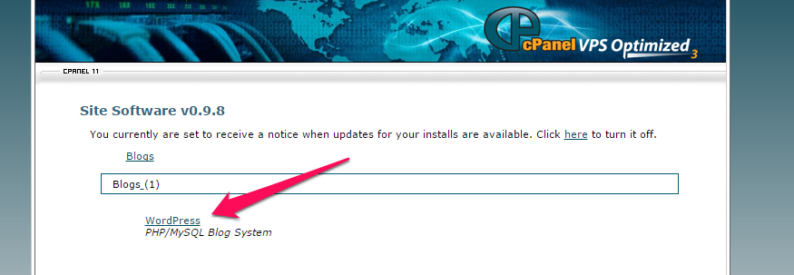

Intro to WordPress
With Rachel Moldovan
@echo_rachel • hello@cococreativ.com • RachelMoldovan.com
Slides located at: rachelmoldovan.com/gdi
Class 1
About you
Why do you want learn WordPress?
- Your name and background
- Why you're here
- Your dream vacation
About the Teaching Assistants
Why do you want to help people learn WordPress?
- Your name and background
- Why you're here
- What you love to do besides code
About me
- Founded and closed web design company, Coco Creative
- Made a WordPress site for my blog in 2011
- Teacher at heart, blogger in spare time
The Rules
- Ask questions you want to know the answer to!
- Raise your hand or speak up at any break
- Grab a TA whenever you need one-on-one help
Schedule
This first class you will...
- Learn what WordPress is
- Learn how to install it
- Learn how to keep it secure
Ready?
Here we go...
What is WordPress?
Official description from WordPress.org
WordPress is web software you can use to create a beautiful website or blog. We like to say that WordPress is both free and priceless at the same time.
WordPress is
Popular
WordPress is the #1 content management system in the world (58.6% marketshare).
WordPress is
Popular
- WordPress is used by 27.4% of the sites on the web.
- WordPress 4.7 has been downloaded over 31,408,428 times
WordPress is
Free, open source, web-based software
WordPress core software is built by hundreds of community volunteers. People all around the word contribute to WordPress by either submitting bugfixes, testing, designing or writing code for the software.
WordPress is
A website building framework
WordPress is a platform for building and designing a website.
WordPress is
A content management system
WordPress allows site owners to manage their site content via a friendly user interface admin dashboard.
WordPress.org vs. WordPress.com
- WordPress.org - Web software used to build a website on a hosting account with a domain name. Sites can be built and modified using themes, plugins or custom code
- WordPress.com - A free blogging service that allows people to create a blog hosted on WordPress.com's servers. Hosting is free (although there are some for-pay add-ons), theme choices are limited, plugins can not be installed and code can not be modified

Installing WordPress
What WordPress needs to run on a remote host
- A hosting account running PHP version 7 or greater and MySQL version 5.6 or greater
- Software from WordPress.org or an install feature through a hosting account control panel
- A domain name (or temporary URL provided by your host)
Installing WordPress
What Is Needed For a Control Panel Install
- Web host needs to offer it
- Access to your hosting control panel
Control Panel Install
Example: Cpanel
Control Panel Install
Example: Cpanel

Control Panel Install
Example: Cpanel

Control Panel Install
Example: Bluehost
 Screenshot by Amy Lynn Andrews
Screenshot by Amy Lynn Andrews
Control Panel Install
Example: WPEngine

Installing WordPress
What Is Needed For a Manual Install
- Access to your hosting control panel to create a database and database user
- A SFTP Program. SFTP (or FTP) is the method used to upload and download files between a computer and a hosting account
- A Web browser. Installation is performed step-by-step on a web browser
Manual Install
Upload WordPress software via SFTP to your hosting account

Manual Install
Bring your site up in a web browser to do the step-by-step install

Local Install
Running WordPress on your computer
If you want to design or develop for WordPress, it's wise to work on a local install.
Local Install
What Is Needed For a Local Install
- An environment on your computer with all the tools WordPress needs to run
- A Web browser. Installation is performed step-by-step on a web browser
Local Install
Creating the environment WordPress needs (Apache, MySQL and PHP)
- Software
- Services
Security
Being popular means you're a target
It is important to take security seriously when running a site that uses a CMS.
Security
During install
- Choose a good host
- Make your database table prefix unique. Don't use "wp_" or "wordpress_"
- Create a new database user, don't use the default
- Make your database user password strong.
- Do not use "admin" as a username. "admin" used to be the default WordPress username. Use a unique username and a very strong Password
Let's Install!
Ready to get up and running?
There are three ways to install:
- Remotely (on your computer, free, not live)
- Softaculous within your hosting (free with hosting)
- SFTP Manually (works well with WPEngine)
Take 20 minutes to install. Remember, the TAs are here to help.
Security
After install: WordPress hardening
- Take some code-level and sysadmin steps to "harden" WordPress
- Securing wp-includes
- Securing wp-config.php
- Disable File Editing
- And more
- Or use a security plugin like Sucuri that performs "1-click hardening"
Security
After your site's live: Monitoring and protection
- Keep WordPress core, themes and plugins updated!
- Use a security plugin
- Use a service that scans and your site daily for malware
- Use a firewall service that shields your site from hackers and malware. Some hosts, like WPEngine.com, have this built into their hosting service
Security
If you do get hacked
- Use a malware removal service.
- Sucuri.net Reasonably priced WordPress security experts
- WPEngine.com WordPress hosting that includes malware cleanup if needed
Class 2
Admin/Dashboard Settings
Tips and tricks to get your site running the way you want it to.
A Tour of the Front End
WordPress comes with the default theme Twenty Seventeen
- A sample post on the home page.
- A sample page
- A sample comment
- A sample tag line "Just another WordPress site"
- A set of sidebar widgets
A Tour of the Backend Admin
Located at: yourdomain.com/wp-admin/
The admin is divided into 3 areas:
- The top menu bar
- The left-hand menu used to navigate to most admin functionality
- The main content window where most admin functionality is performed
A Tour of the Backend Admin
Located at: yourdomain.com/wp-admin/
Tip: You can change what's displayed on an admin page by clicking on the "screen options" tab in the upper right corner.
Another Tip: Open the front end of your site in one browser tab and the backend in another so you can easily switch between the 2 as you make changes to your site.
Setting Up Your Site
The Settings menu
- General: Title, tagline, site address, date format, etc.
- Writing: Post-related settings
- Reading: Set site home page, # of posts, rss settings and search engine visibility
- Discussion: Manage comment settings
- Media: Make default image sizes and other media settings
- Permalinks: Define the structure of site URLs
Exercise time!
Some tasks to get you familiar with the Settings menu and dashboard
- Change the name of your site
- Change the "Front page" of your site to the sample page
- Require users to register before posting a comment
- Change the dimensions of "Large size" images
- Remove the "WordPress News" from the dashboard
Changing Site Appearance
The Appearance menu
- Themes: Manage the current theme in use and other installed themes
- Widgets: Manage widgets you can add to site sidebars or other "widgetized" areas
- Menus: Manage navigation menus
- Header: Manage header text and image
- Background: Manage background color and image
- Editor: Dangerous way to edit theme and plugin flies. This is disabled if you "harden" WordPress
Changing Site Appearance
The Customizer
Make customizations to your site's appearance and preview them in real time before making them live.
Exercise time!
Some tasks to get you familiar with the Appearance menu
- Remove a few widgets and add some of your own text to the sidebar using a text widget
- Add a header image
- Change the Color Scheme
- Try adding a favicon using the Customizer
Adding Content
Pages and Posts
- Pages: Regular static website pages with content
- Posts: Entries (like blog posts) that have a date, categories and tags assigned to them. They can be listed in a particular order (chronologically, alphabetically, etc.) and fed to other sites or blog readers via an RSS feed
Let's Play
Is it a Page or a Post?
Is it a Page or a Post?
- Restaurant review
- About us
- One of multiple press releases
- A news announcement
- Terms and Conditions
- Our Services
- One of multiple portfolio pieces
- Mission statement
Adding Content
Pages
- Page Title
- Permalink: Manage the name of the page URL
- Page Content
- Revisions: View and restore previous versions of the page
- Custom Fields: Additional fields (display requires theme support)
- Discussion: Turn comments on or off for this page
- Comments: Displays current page comments
- Slug: Manage the name of the page slug
- Author: Switch between post authors (display requires theme support)
Adding Content
Pages
- Publish Change publish status and visibility settings and view revisions
- Page Attributes: Assign a page "parent", choose template and sort order
- Featured Image: Assign an image to page (requires theme support)
Adding Content
Using the content editor
- Visual and Text tabs: Toggle between WYSIWYG and code view
- Add Media Upload pictures and other files
- Button Bar Use formatting and display options
- Embeds Paste links to popular media services and they will automatically display on the page [sample video]
Welcome back!
This afternoon you will...
- Learn about posts
- Create Content for your site
- Learn about the remaining admin menu items
- Learn about Plugins and how to find, install and activate them
- Learn about Themes and how to find, install, preview and activate them
- Learn about further options for customizing WordPress
- End with resources, questions, one-and-one help and wrap-up
Adding Content
Posts
- Excerpt Determine an excerpt for a post (display requires theme support)
- Send Trackbacks: More information on trackbacks
- Format: Choose between several post formats (display requires theme support)
- Categories and Tags: Assign categories and tags to allow posts to be organized by subject
Adding Content
Tip
Use the bulk editor on the page or post list to make edits to multiple pages or posts at a time (like removing comments).
Exercise time!
Create pages and posts for your site.
Try to include some of the following:
- Add the Pages widget to your sidebar to navigate pages
- Add pages with text and pictures
- Make a page password-protected
- Add posts and use different formats
- Make a page a "child" of another page
- Add a video to a page using an auto embed
Managing Menus
Appearance > Menus
Easily create and manage navigation menus
- Create menus: Enter a menu name and click "Create Menu"
- Add pages: Add existing pages, custom links or category pages
- Order Pages: Drag and drop your pages menu items in the desired order. Indent pages to make them children of other pages
- Assign Menu to Theme location: When the menu is ready, assign it to a theme location and click "Save Menu."
- Manage Locations Tab: Assign menus to theme locations
Managing Menus
The Customizer
Manage your menus AND pages at the same time.
Managing Comments
The Comments menu
View, approve, delete and mark comments as spam.
Managing Media
The Media menu
View all files that have been uploaded to the site via the content editor. Add, edit and delete files.
Managing Users
The Users menu
- Manage existing users: Edit all user data or delete users
- Add new users: Assign new users to site
- Your Profile: Edit your own profile settings
Managing Users
User roles
Users can be given certain levels of editing privileges.
- Administrator: access to all the administration features within a single site
- Editor: ability to publish and manage posts including the posts of other users
- Author: ability to publish and manage their own posts
- Contributor: ability to write and manage their own posts but cannot publish them
- Subscriber: ability to only manage their profile
What are Plugins?
Official description from WordPress.org
Plugins can extend WordPress to do almost anything you can imagine.
Plugins are
Powerful
Plugins are used to add functionality to WordPress. Examples include ecommerce, SEO, forms, photo galleries, social media sharing, forums and much more!
Plugins are
Often Free
Right now there are 48,658 free plugins in the official WordPress Plugin Directory.
Plugins
Plugins menu
WordPress comes with 2 plugins:
- Akismet: Protects your blog from comment and trackback spam. This plugin requires an Akismet key
- Hello Dolly: Adds a random lyric from "Hello Dolly" to the upper right-hand corner of admin screen.
Plugins
Managing Plugins
- Activate/Deactivate: Turns plugins "on" and "off"
- Edit: Ability to edit plugin files NOT RECOMMENDED
- Delete: Delete deactivated plugins
Plugins
Finding plugins
- Searching under Plugins > Add New
- Browsing the WordPress Plugin Directory
Plugins
3 ways to install plugins
- Clicking "Install Now" from "Install Plugins" search results
- Download a plugin zip file and install it via the "Upload" link
- Unzip the plugin files and upload it via FTP to the
/wp-content/pluginsfolder
Plugins
Usage tip
Plugins often use shortcodes to add content to a page or post.
For example, the plugin Contact Form 7 uses the shortcode [contact-form-7 id="105"] (the ID is the ID of the form) to allow you a form to a page or post.
Plugins
Security tip - Vet plugins first
- Ratings Read the plugin reviews
- Maintenance Check to see it the plugin has regular updates
- Support See if the plugin developers regularly answer support questions
Top Free Plugins
Favorite Free plugins
- WordPress SEO by Yoast: SEO plugin for WordPress
- Contact Form 7: Used to make simple contact forms
- WooCommerce: Ecommerce plugin
- Sucuri Free: Malware scanning and 1-click hardening
Top Premium Plugins
Favorite For-pay plugins
- Gravity Forms: A very powerful and feature-rich forms builder
- Backup Buddy: Easily backup, restore and migrate a WordPress site
Exercise time!
Some tasks to get you familiar with installing and activating plugins
- Search for plugins via Plugins > Add New and try some
- Browse the WordPress Plugins Directory, download one and install it using the "upload" link
What are Themes?
Official description from WordPress.org
Fundamentally, the WordPress Theme system is a way to 'skin' your weblog. Yet, it is more than just a 'skin.' Skinning your site implies that only the design is changed. WordPress Themes can provide much more control over the look and presentation of the material on your website.
Themes are
Powerful
A theme not only determines how a site looks, it can also add functionality. There are themes that can turn a WordPress site into an online store, an art portfolio and more.
Themes are
Often Free
Right now there are over 2,406 free themes in the official WordPress Themes Directory.
Managing Themes
Appearance > Themes
WordPress currently comes with 3 themes: Twenty Seventeen, Twenty Sixteen and Twenty Fifteen.
Under Appearance > Themes is a list of all installed themes. The theme in use is labeled "Active."
Themes
Appearance > Themes
"Live Preview" before you activate or customize a theme
Click "Customize" under the current theme or "Live Preview" under an available theme to see how a new or modified theme will look before you commit to it.
Themes
Finding new themes
- Searching under the "Add Themes" tab
- Browsing the WordPress Themes Directory
Themes
3 ways to install themes
- Install right from the "Install Themes" tab
- Download a theme zip file and install it via the "upload theme" link
- Unzip the theme files and upload it via SFTP, FTP, Git, etc. to the
/wp-content/themesfolder
Exercise time!
Some tasks to get you familiar with installing, previewing and activating themes
- Use the live theme previewer to see how Twenty Fourteen will look on your site and try activating it
- Search for themes via the "Install Themes" tab and give one a try
- Browse the WordPress Themes Directory, download one and install it using the "upload" link
Where to go from here?
Further Customizing WordPress
Power Users - Use theme frameworks to tweak site design.
Web Designers - Use HTML, CSS and PHP to build your own themes.
Where to go from here?
Power users
Theme Frameworks
- Genesis - The Genesis Framework empowers you to quickly and easily build incredible websites with WordPress.
- Thesis - Web design that you can customize from the comfort of your WordPress dashboard
- WooThemes Canvas - WordPress theme with facilities to change just about every element of the layout and style
- And many more!
Where to go from here?
Web designers
Folks with HTML/CSS skill set can customize or build their own WordPress themes.
Resources
Join the Girl Develop It Atlanta Slack Group
A Slack Group students where members can network with each other, post questions and help each other navigate the world of WordPress.
Resources
Join the Atlanta WordPress Meetup Group
The Atlanta WordPress Meetup Group is a group of WordPress enthusiasts in and around the Atlanta area who love working with WordPress in a variety of different ways.
Resources
Attend a WordCamp
WordCamps are affordable, informal, community-organized WordPress conferences held all over the world. They are packed with workshops geared toward WordPress users, designers and developers.
Questions?
One-on-one help time
Feel free to pull me or a TA over to answer questions specific to your projects or regarding any issue not covered in class.
THE END
Thank you!
And please take the GDI survey